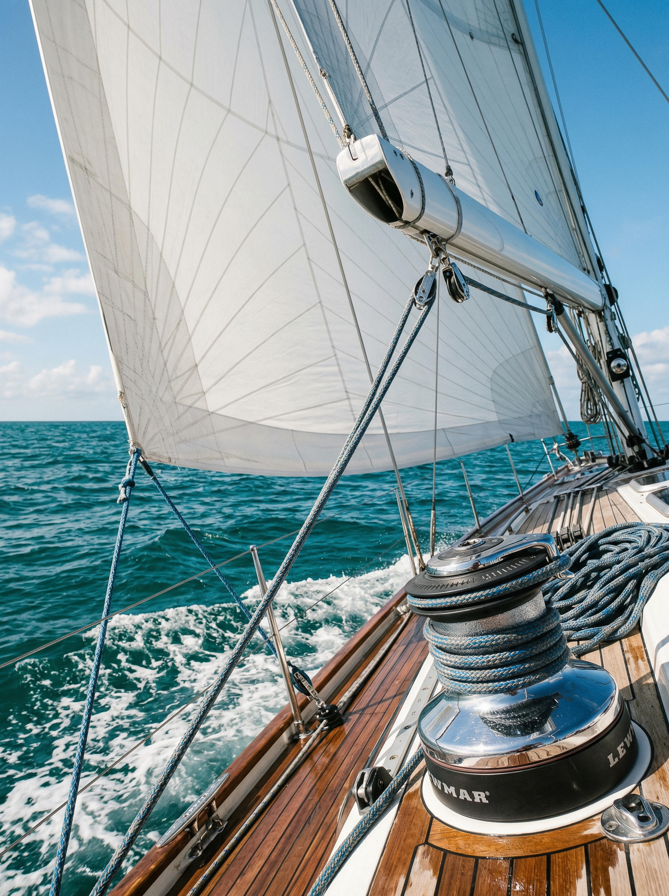
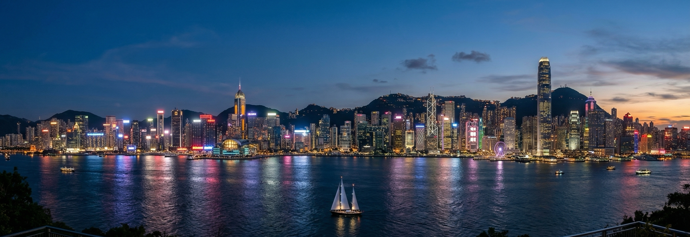
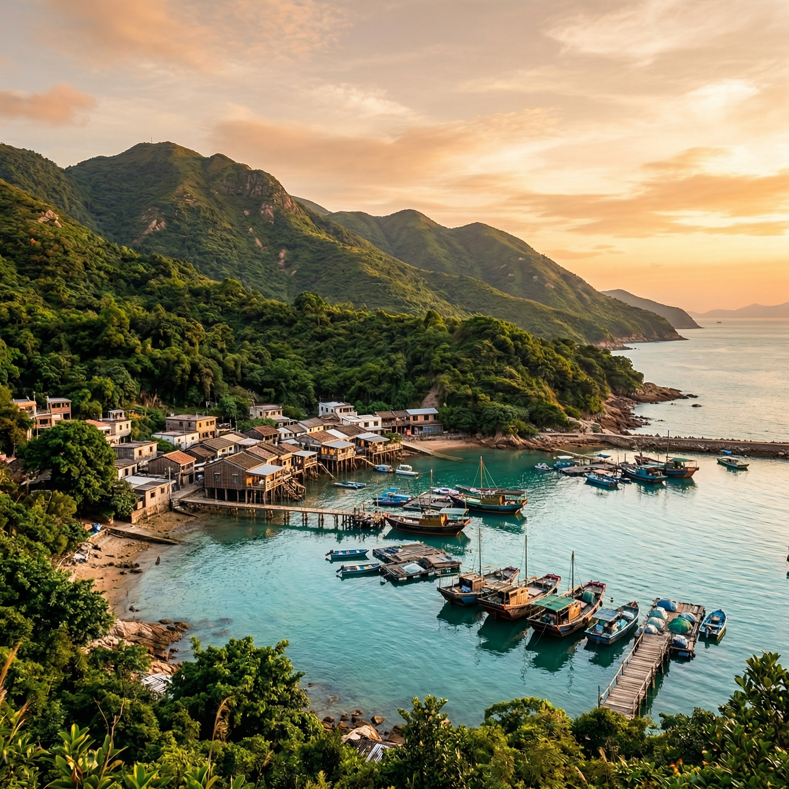
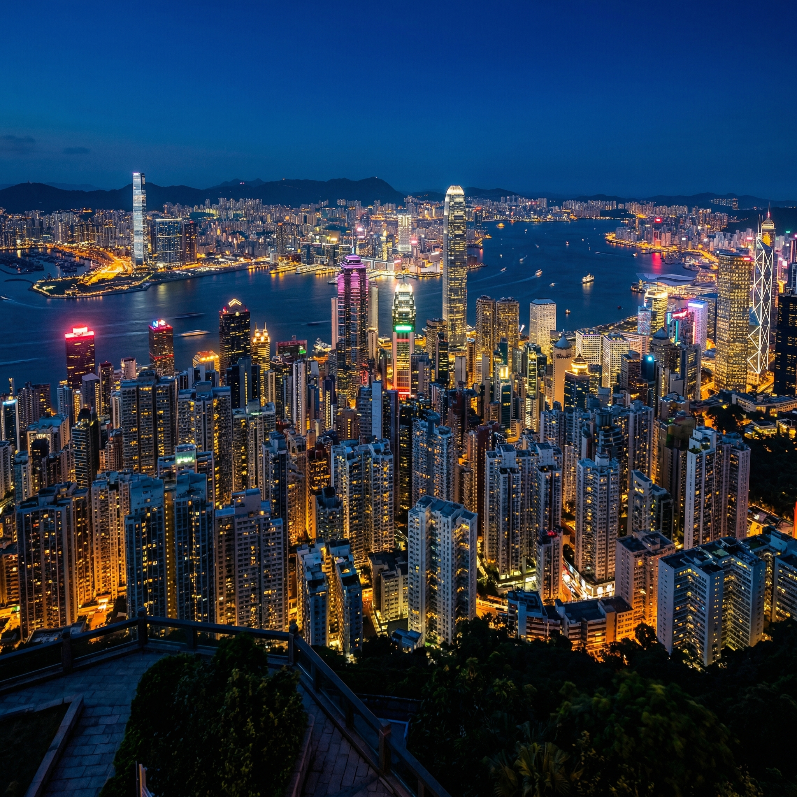

帆船协会会长带队 · 双船长保驾护航
扬帆出海 · 离岛探访 · 香港私享沙龙
这次旅程是什么
驾驶大型帆船从深圳湾出发，穿越伶仃洋，正式入境香港——这条路线，没有任何成熟的旅行产品可以复制。帆船协会会长亲自带队，两名专业船长全程保驾护航。无论你是第一次踏上甲板的新手，还是早已熟悉风帆语言的老手，都能在这次旅程里找到属于自己的那份自在。
香港的那一天，是南丫岛渔村的海风与地道滋味，是太平山顶缆车与维港日落，是一场只属于在座者的闭门私享沙龙。出发前，你或许只是想去看看海；回来之后，你可能带着一些以前没想过的问题。

核心体验
从深圳湾游艇会起锚，航经伶仃洋，绕过香港西面水道正式入境——这段航程，每一海里都是普通旅行者无法触及的体验。
帆船不是渡轮，也不是游轮。在甲板上，你能感受到风向的变化、船体随浪涌的起伏，以及那种"自己驾着一艘船去往另一片水域"才有的真实感。
双船长全程护航，新手可以参与操帆，老手可以亲手掌舵。
穿越伶仃洋，以非日常的纯粹航海方式直达香港，市面无此常规路线。
深入无车马喧嚣的避世南丫岛渔村，品尝地道风味，感受截然不同的香港。
特邀顶尖专家于香港金融腹地闭门剖析宏观格局，议题直指每个家庭绕不过去的现实问题。
百年复古缆车登顶，俯瞰世界级璀璨维港夜景，尽享繁华巅峰的视觉震撼。
行程安排
武汉 → 深圳
深圳湾 → 香港 → 南丫岛
香港 · 闭门沙龙 · 太平山
香港 → 武汉

深度风貌

当帆船靠近南丫岛，钢铁森林被郁郁葱葱的植被与低矮村屋取代。这里没有汽车，没有高楼，只有渔船、旧路和海风。专属导游带领漫步，品尝岛上地道风味。这是大多数到访香港的人，一辈子都不会走进来的地方。

如果南丫岛代表了出世的宁静，那太平山顶则是入世的极尽繁华。乘坐逾百年历史的复古缆车缓缓登顶，维多利亚港两岸的天际线在眼前毫无保留地铺开。当夜幕降临，那片灯火不只是风景——它是一座城市用整整一个世纪积累出来的答案。
为什么是这次
以大型帆船从深圳湾出发，穿越伶仃洋正式入境香港——这不是任何一家旅行社的常规产品，市面上没有同类选项。会长带队，双船长护航，新手老手皆宜。
绕开游客人群，专属导游带领深入渔村，品尝地道离岛风味——这是香港本地人珍视、却鲜少出现在旅行攻略里的地方。
受邀嘉宾于私人银行会所闭门分享，议题涉及全球政经格局与家庭财富视野。不录制，不传播，只属于在场的人。
共同出海，共享一顿饭，共看一次日落——四天三晚建立的连接，比任何名片交换都更有分量。
闭门沙龙 · 受邀嘉宾
从全球政经格局切入，探讨当下宏观环境对每个家庭的真实影响。不谈抽象理论，只聊在座每个人都绕不过去的现实课题：在不确定的时代，如何为家庭的下一步做好准备？财务安全感从何而来？孩子的教育路径，又该如何在更宽的视野下重新审视？
行程服务
有一些时刻，不是在海上待过的人，说不清楚.
写给每一位出发的人